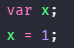
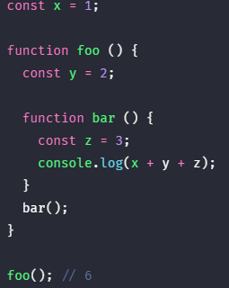

실행 컨텍스트는 자바스크립트의 동작 원리를 담고 있는 핵심 개념이다. 실행 컨텍스트를 바르게 이해하면 자바스크립트가 스코프를 기반으로 식별자와 식별자에 바인딩된 값(식별자 바인딩)을 관리하는 방식과 호이스팅이 발생하는 이유, 클로저의 동작 방식 그리고 태스크 큐와 함께 동작하는 이벤트 핸들러와 비동기 처리의 동작 방식에 대해 이해할 수 있다.
1. 소스 코드의 타입 #
ECMAScript 사양은 소스 코드를 4가지 타입으로 구분한다.
| 소스 코드의 타입 | 설명 |
|---|---|
| 전역 코드 | 전역에 존재하는 소스 코드를 말한다. 전역에 정의된 함수, 클래스 등의 내부 코드는 포함되지 않는다. |
| 함수 코드 | 함수 내부에 존재하는 소스 코드를 말한다. 함수 내부에 중첩된 함수, 클래스 등의 내부 코드는 포함되지 않는다. |
| eval 코드 | 빌트인 전역 함수인 eval 함수에 인수로 전달되어 실행되는 소스 코드를 말한다. |
| 모듈 코드 | 모듈 내부에 존재하는 소스 코드를 말한다. 모듈 내부의 함수, 클래스 등의 내부 코드는 포함되지 않는다. |
소스 코드를 4가지 타입으로 구분하는 이유는 소스 코드의 타입에 따라 실행 컨텍스트를 생성하는 과정과 관리 내용이 다르기 때문이다.
- 전역 코드: 전역 코드는 전역 변수를 관리하기 위해 최상위 스코프인 전역 스코프를 생성해야 한다. 그리고 var 키워드로 선언된 전역 변수와 함수 선언문으로 정의된 전역 함수를 전역 객체의 프로퍼티와 메소드로 바인딩하고 참조하기 위해 전역 객체와 연결되어야 한다. 이를 위해 전역 코드가 평가되면 전역 실행 컨텍스트가 생성된다.
- 함수 코드: 함수 코드는 지역 스코프를 생성하고 지역 변수와 매개 변수를 관리해야 한다. 그리고 생성한 지역 스코프를 전역 스코프에서 시작하는 스코프 체인의 일원으로 연결해야 한다. 이를 위해 함수 코드가 평가되면 함수 실행 컨텍스트가 생성된다.
- eval 코드: eval 코드는 엄격 모드(strict mode)에서 자신만의 독자적인 스코프를 생성한다. 이를 위해 eval 코드가 평가되면 eval 실행 컨텍스트가 생성된다.
- 모듈 코드: 모듈 코드는 모듈 별로 독립적인 스코프를 생성한다. 이를 위해 모듈 코드가 평가되면 모듈 실행 컨텍스트가 생성된다.

2. 소스 코드의 평가와 실행 #
모든 소스 코드는 실행에 앞서 평가 과정을 거치며 코드 실행을 위한 준비를 한다. 다시 말해 자바스크립트는 소스 코드를 2개의 과정, 즉 소스 코드의 평가와 소스 코드의 실행으로 나누어 처리한다.
소스 코드 평가 과정에서는 실행 컨텍스트를 생성하고 변수, 함수 등의 선언문 만을 먼저 실행하여 생성된 변수나 함수 식별자를 키로 실행 컨텍스트가 관리하는 스코프(렉시컬 환경의 환경 레코드)에 등록한다.
소스 코드의 평가 과정이 끝나면 비로소 선언문을 제외한 소스 코드가 순차적으로 실행되기 시작한다. 이때 소스 코드 실행에 필요한 정보, 즉 변수나 함수의 참조를 실행 컨텍스트가 관리하는 스코프에서 취득한다. 그리고 변수 값의 변경과 같은 소스 코드의 실행 결과는 다시 실행 컨텍스트가 관리하는 스코프에 등록된다.

예를 들어 아래와 같은 소스 코드가 실행된다고 생각해보자.

자바스크립트는 위 예제를 2개의 과정으로 나누어 처리한다. 먼저 소스 코드 평가 과정에서 변수 선언문 var x;을 먼저 실행한다. 이때 생성된 변수 x는 실행 컨텍스트가 관리하는 스코프에 등록된다.

소스 코드 평가 과정이 끝나면 비로소 소스 코드 실행 과정이 시작된다. 변수 선언문 var x;는 소스 코드 평가 과정에서 이미 실행이 완료되었다. 따라서 소스 코드 실행 과정에서는 변수 할당문 x = 1;만 실행된다. 이때 변수 x에 값을 할당하려면 변수 x가 선언된 변수인지 확인해야 한다.
이를 위해 실행 컨텍스트가 관리하는 스코프에 변수 x가 등록되어 있는지 확인한다. 만약 변수 x가 등록되어 있다면 변수 x는 선언된 변수, 즉 소스 코드 평가 과정에서 선언문이 실행되어 등록된 변수이다. 변수 x가 선언된 변수라면 값을 할당하고 할당 결과를 실행 컨텍스트에 등록하여 관리한다.

3. 실행 컨텍스트의 역할 #
아래 예제는 전역 코드와 함수 코드로 구성되어 있다. 자바스크립트 엔진이 아래 예제를 어떻게 평가하고 실행할지 생각해보자.
- 1. 전역 코드 평가
먼저 전역 코드를 실행하기에 앞서 전역 코드 평가 과정을 거치며 전역 코드 실행을 위한 준비를 한다. 소스 코드 평가 과정에서는 선언문 만을 먼저 실행한다. 따라서 전역 코드의 변수 선언문과 함수 선언문이 먼저 실행되고 그 결과 생성된 전역 변수와 전역 함수가 실행 컨텍스트가 관리하는 전역 스코프에 등록된다. 또한 var 키워드로 선언된 전역 변수와 함수 선언문으로 정의된 전역 함수는 전역 객체의 전역 객체의 프로퍼티와 메소드가 된다.
- 2. 전역 코드 실행
전역 코드의 평가가 끝나면 전역 코드가 순차적으로 실행되기 시작한다. 이때 전역 변수에 값이 할당되고 함수가 호출된다. 함수가 호출되면 순차적으로 실행되던 전역 코드의 실행을 일시 중단하고 코드 실행 순서를 변경하여 함수 내부로 진입한다.
- 3. 함수 코드 평가
코드 실행 순서가 변경되어 함수 내부로 진입하면 함수 내부의 문들을 실행하기에 앞서 함수 코드 평가 과정을 거치며 함수 코드 실행을 위한 준비를 한다. 이때 매개 변수와 지역 변수 선언문이 먼저 실행되고 그 결과 생성된 매개 변수와 지역 변수가 실행 컨텍스트가 관리하는 지역 스코프에 등록된다. 또한 함수 내부에서 지역 변수처럼 사용할 수 있는 arguments 객체도 생성되어 지역 스코프에 등록된다.
- 4. 함수 코드 실행
함수 코드의 평가가 끝나면 함수 코드가 순차적으로 실행되기 시작한다. 이때 매개 변수와 지역 변수에 값이 할당되고 console.log 메소드가 호출된다.
console.log 메소드를 호출하기 위해 먼저 식별자 console을 스코프 체인을 통해 검색한다. 이를 위해 함수 코드의 지역 스코프는 상위 스코프인 전역 스코프와 연결되어야 한다. 하지만 식별자 console은 스코프 체인에 등록되어 있지 않고 전역 객체에 프로퍼티로 존재한다. 이는 전역 객체의 프로퍼티가 마치 전역 변수처럼 전역 스코프에서 검색 가능해야 한다는 것을 의미한다.
다음은 log 프로퍼티를 console 객체의 프로토타입 체인을 통해 검색한다. 그후 console.log 메소드의 인수로 전달된 표현식 a + x + y가 평가된다. 식별자 a, x, y는 스코프 체인을 통해 검색한다. console.log 메소드의 실행이 종료되면 함수 코드의 실행이 종료되고 함수 호출 이전으로 되돌아가 전역 코드 실행을 계속한다.
이처럼 코드가 실행되려면 스코프를 구분하여 식별자와 바인딩된 값을 관리할 수 있어야 한다. 그리고 중첩 관계에 의해 스코프 체인을 형성하여 식별자를 검색할 수 있어야 하고, 전역 객체의 프로퍼티도 전역 변수처럼 검색할 수 있어야 한다.
또한 함수 호출이 종료하면 함수 호출 이전으로 되돌아가기 위해 현재 실행 중인 코드와 이전에 실행하던 코드를 구분하여 관리해야 한다. 이처럼 코드가 실행되려면 아래와 같이 스코프, 식별자, 코드 실행 순서 등의 관리가 필요하다.- 선언에 의해 생성된 모든 식별자(변수, 함수, 클래스 등)를 스코프를 구분하여 등록하고 상태 변화(식별자에 바인딩된 값의 변화)를 지속적으로 관리할 수 있어야 한다.
- 스코프는 중첩 관계에 의해 스코프 체인을 형성해야 한다. 즉, 스코프 체인을 통해 상위 스코프로 이동하며 식별자를 검색할 수 있어야 한다.
- 현재 실행 중인 코드의 실행 순서를 변경(예를 들어 함수 호출에 의한 실행 순서 변경)할 수 있어야 하며 다시 되돌아갈 수도 있어야 한다.
좀 더 구체적으로 말해, 실행 컨텍스트는 식별자(변수, 함수, 클래스 등의 이름)를 등록하고 관리하는 스코프와 코드 실행 순서 관리를 구현한 내부 매커니즘으로 모든 코드는 실행 컨텍스트를 통해 실행되고 관리된다.
식별자와 스코프는 실행 컨텍스트의 렉시컬 환경으로 관리하고 코드 실행 순서는 실행 컨텍스트 스택으로 관리한다. 먼저 실행 컨텍스트 스택에 대해 살펴보도록 하자.
4. 실행 컨텍스트 스택 #
아래 예제를 살펴보자.

위 예제는 소스 코드의 타입으로 분류할 때 전역 코드와 함수 코드로 이루어져 있다. 자바스크립트 엔진은 먼저 전역 코드를 평가하여 전역 실행 컨텍스트를 생성한다. 그리고 함수가 호출되면 함수 코드를 평가하여 함수 실행 컨텍스트를 생성한다.
이때 생성된 실행 컨텍스트는 스택 자료 구조로 관리된다. 이를 실행 컨텍스트 스택이라고 부른다.
실행 컨텍스트 스택을 콜 스택(Call stack)이라고 부르기도 한다.
위 코드를 실행하면 코드가 실행되는 시간의 흐름에 따라 실행 컨텍스트 스택에는 아래와 같이 실행 컨텍스트가 추가(push)되고 제거(pop)된다.

1. 전역 코드의 평가와 실행
자바스크립트 엔진은 먼저 전역 코드를 평가하여 전역 실행 컨텍스트를 생성하고 실행 컨텍스트 스택에 푸시한다. 이때 전역 변수 x와 전역 함수 foo는 전역 실행 컨텍스트에 등록된다. 이후, 전역 코드가 실행되기 시작하여 전역 변수 x에 값이 할당되고 전역 함수 foo가 호출된다.
2. foo 함수 코드의 평가와 실행
전역 함수 foo가 호출되면 전역 코드의 실행은 일시 중단되고 코드의 제어권이 foo 함수 내부로 이동한다. 자바스크립트 엔진은 foo 함수 내부의 함수 코드를 평가하여 foo 함수 실행 컨텍스트를 생성하고 실행 컨텍스트 스택에 푸시한다. 이때 foo 함수의 지역 변수 y와 중첩 함수 bar가 foo 함수 실행 컨텍스트에 등록된다. 이후, foo 함수 코드가 실행되기 시작하여 지역 변수 y에 값이 할당되고 중첩 함수 bar가 호출된다.
3. bar 함수 코드의 평가와 실행
중첩 함수 bar가 호출되면 함수 foo 코드의 실행은 일시 중단되고 코드의 제어권이 bar 함수 내부로 이동한다. 자바스크립트 엔진은 bar 함수 내부의 함수 코드를 평가하여 bar 함수 실행 컨텍스트를 생성하고 실행 컨텍스트 스택에 푸시한다. 이때 bar 함수의 지역 변수 z가 bar 함수 실행 컨텍스트에 등록된다. 이후, bar 함수 코드가 실행되기 시작하여 지역 변수 z에 값이 할당되고 console.log 메소드를 호출(console.log 메소드도 함수이므로 호출되면 실행 컨텍스트를 생성하고 실행 컨텍스트 스택에 푸시한다.)한 이후, 함수 bar는 종료된다.
4. foo 함수 코드로 복귀
함수 bar가 종료되면 코드의 제어권은 다시 함수 foo로 이동한다. 이때 자바스크립트 엔진은 bar 함수 실행 컨텍스트를 실행 컨텍스트 스택에서 팝하여 제거한다. 그리고 함수 foo는 더 이상 실행할 코드가 없으므로 종료된다.
5. 전역 코드로 복귀
함수 foo가 종료되면 코드의 제어권은 다시 전역 코드로 이동한다. 이때 자바스크립트 엔진은 foo 함수 실행 컨텍스트를 실행 컨텍스트 스택에서 팝하여 제거한다. 그리고 더 이상 실행할 전역 코드가 남아 있지 않으므로 전역 실행 컨텍스트도 실행 컨텍스트 스택에서 팝되어 실행 컨텍스트 스택에는 아무것도 남아있지 않게 된다.
이처럼 실행 컨텍스트 스택은 코드의 실행 순서를 관리한다. 소스 코드가 평가되면 실행 컨텍스트가 생성되고 실행 컨텍스트 스택의 최상위에 쌓인다. 실행 컨텍스트 스택의 최상위에 존재하는 실행 컨텍스트는 언제나 현재 실행 중인 코드의 실행 컨텍스트이다. 따라서 실행 컨텍스트 스택의 최상위에 존재하는 실행 컨텍스트를 실행 중인 실행 컨텍스트라 부른다.
5. 렉시컬 환경 #
렉시컬 환경은 식별자와 식별자에 바인딩된 값 그리고 상위 스코프에 대한 참조를 기록하는 환경으로 실행 컨텍스트를 구성하는 컴포넌트이다. 실행 컨텍스트 스택이 코드의 실행 순서를 관리한다면 렉시컬 환경은 스코프와 식별자를 관리한다.

렉시컬 환경은 객체 형태의 스코프(전역, 함수, 블록 스코프)를 생성하여 식별자를 키로 등록하고 식별자에 바인딩된 값을 관리한다. 즉, 렉시컬 환경은 스코프를 구분하여 식별자를 등록하고 관리하는 저장소 역할을 하는 렉시컬 스코프의 실체이다.
실행 컨텍스트는 LexicalEnvironment 컴포넌트와 VariableEnvironment 컴포넌트로 구성된다. 생성 초기의 실행 컨텍스트와 렉시컬 환경을 그림으로 표현하면 아래와 같다.

생성 초기에 LexicalEnvironment 컴포넌트와 VariableEnvironment 컴포넌트는 하나의 동일한 렉시컬 환경을 참조한다. 이후, 몇가지 상황을 만나면 VariableEnvironment 컴포넌트를 위한 새로운 렉시컬 환경을 생성하여 생성하고 이때부터 VariableEnvironment 컴포넌트와 LexicalEnvironment 컴포넌트는 내용이 달라지는 경우도 있다. 이 책에서는 strict mode와 eval 코드, try/catch 문과 같은 특수한 상황은 제외하고, LexicalEnvironment 컴포넌트와 VariableEnvironment 컴포넌트도 구분하지 않고 렉시컬 환경으로 통일해 간략하게 설명하려 한다.
렉시컬 환경은 아래와 같이 두개의 컴포넌트로 구성된다.

- 환경 레코드(Environment Record): 스코프에 포함된 식별자를 등록하고 등록된 식별자에 바인딩된 값을 관리하는 저장소이다. 환경 레코드는 소스 코드의 타입에 따라 내용에 차이가 있다.
- 외부 렉시컬 환경에 대한 참조: 외부 렉시컬 환경에 대한 참조는 상위 스코프를 가리킨다. 이때 상위 스코프란 외부 렉시컬 환경, 즉 해당 실행 컨텍스트를 생성한 소스 코드를 포함하는 상위 코드의 렉시컬 환경을 말한다. 외부 렉시컬 환경에 대한 참조를 통해 단방향 링크드 리스트인 스코프 체인을 구현한다.
6. 실행 컨텍스트의 생성과 식별자 검색 과정 #
아래 예제를 통해 어떻게 실행 컨텍스트가 생성되고 코드 실행 결과가 관리되는지 그리고 어떻게 실행 컨텍스트를 통해 식별자를 검색하는지 살펴보도록 하자.
6.1. 전역 객체 생성 #
전역 객체는 전역 코드가 평가되기 이전에 생성된다. 이때 전역 객체에는 전역 프로퍼티와 전역 함수, 표준 빌트인 객체가 추가되며 동작 환경(클라이언트 사이드 또는 서버 사이드)에 따라 클라이언트 사이드 Web API 또는 특정 환경을 위한 호스트 객체를 포함한다.
전역 객체도 Object.prototype을 상속받는다. 즉, 전역 객체도 프로토타입 체인의 일원이다.
6.2. 전역 코드 평가#
소스 코드가 로드되면 자바스크립트 엔진은 전역 코드를 평가한다. 전역 코드 평가는 아래 순서로 진행된다.
1. 전역 실행 컨텍스트 생성
2. 전역 렉시컬 환경 생성
2.1. 전역 환경 레코드 생성
2.1.1. 객체 환경 레코드 생성
2.1.2. 선언적 환경 레코드 생성
2.2. 외부 렉시컬 환경에 대한 참조 할당
2.3. this 바인딩
위 과정을 거쳐 생성된 전역 실행 컨텍스트와 렉시컬 환경은 아래와 같다.

세부적인 생성 과정에 대해 순서대로 살펴보자.
1. 전역 실행 컨텍스트 생성
먼저 전역 실행 컨텍스트를 생성하여 실행 컨텍스트 스택에 푸시한다. 이때 전역 실행 컨텍스트는 실행 컨텍스트 스택의 최상위, 즉 실행 중인 실행 컨텍스트가 된다.

2. 전역 렉시컬 환경 생성
전역 렉시컬 환경을 생성하고 전역 실행 컨텍스트의 LexicalEnvironment 컴포넌트와 VariableEnvironment 컴포넌트에 바인딩한다.

2.1 전역 환경 레코드 생성
전역 렉시컬 환경을 구성하는 컴포넌트인 전역 환경 레코드는 전역 변수를 관리하는 전역 스코프 그리고 전역 객체의 표준 빌트인 객체, 전역 빌트인 프로퍼티 및 메소드를 제공한다.
모든 전역 변수가 전역 객체의 프로퍼티가 되는 ES6 이전에는 전역 객체가 전역 환경 레코드의 역할을 수행했다. ES6의 let, const 키워드로 선언한 전역 변수는 전역 객체의 프로퍼티가 되지 않고 개념적인 블록 내에 존재하게 된다.
이처럼 기존의 var 키워드로 선언한 전역 변수와 ES6의 let, const 키워드로 선언한 전역 변수를 구분하여 관리하기 위해 전역 스코프 역할을 하는 전역 환경 레코드는 객체 환경 레코드와 선언적 환경 레코드로 구성되어 있다.
객체 환경 레코드는 기존의 전역 객체가 관리하던 var 키워드로 선언한 전역 변수와 함수 선언문으로 정의한 전역 함수 그리고 표준 빌트인 객체, 전역 빌트인 프로퍼티 및 메소드를 관리하고, 선언적 환경 레코드는 let, const 키워드로 선언한 전역 변수를 관리한다. 즉, 전역 환경 레코드의 객체 환경 레코드와 선언적 환경 레코드는 서로 협력하여 전역 스코프와 전역 객체(전역 변수의 전역 객체 프로퍼티화)를 관리한다.
2.1.1. 객체 환경 레코드 생성
전역 환경 레코드를 구성하는 컴포넌트인 객체 환경 레코드는 BindingObject라고 부르는 객체와 연결된다.
전역 코드 평가 과정에서 var 키워드로 선언한 전역 변수와 함수 선언문으로 정의된 전역 함수는 전역 환경 레코드의 객체 환경 레코드에 연결된 BindingObject를 통해 전역 객체의 프로퍼티와 메소드가 된다. 그리고 이때 등록된 식별자를 전역 환경 레코드의 객체 환경 레코드에서 검색하면 전역 객체의 프로퍼티를 검색하여 반환한다.
이것이 var 키워드로 선언된 전역 변수와 함수 선언문으로 정의된 전역 함수가 전역 객체의 프로퍼티와 메소드가 되고 전역 객체의 식별자(window) 없이 전역 객체의 프로퍼티를 참조(예를 들어 window.alert을 alert으로 참조)할 수 있는 메커니즘이다.
위 예제의 전역 변수 x와 전역 함수 foo는 객체 환경 레코드를 통해 객체 환경 레코드의 BindingObject에 바인딩되어 있는 전역 객체의 프로퍼티와 메소드가 된다.

변수 x는 var 키워드로 선언한 변수이다. 따라서 “선언 단계”와 “초기화 단계”가 동시에 진행된다. 다시 말해, 전역 코드 평가 시점에 객체 환경 레코드에 바인딩된 BindingObject에 변수 식별자를 등록한 다음, 암묵적으로 undefined를 바인딩한다.
따라서 var 키워드로 선언한 변수는 코드 실행 단계(현 시점은 코드 실행 단계가 아니라 코드 평가 단계이다.)에서 변수 선언문 이전에도 참조할 수 있다. 단, 변수 선언문 이전에 참조한 변수의 값은 언제나 undefined이다. var 키워드로 선언한 변수에 할당한 함수 표현식도 이와 동일하게 동작한다. 이것이 변수 호이스팅이 발생하는 원인이다.
함수 선언문으로 정의한 함수가 평가되면 함수 이름과 동일한 이름의 식별자를 객체 환경 레코드에 바인딩된 BindingObject에 등록하고 생성된 함수 객체를 즉시 할당한다. 이것이 변수 호이스팅과 함수 호이스팅의 차이이다. 즉, 함수 선언문으로 정의한 함수는 함수 선언문 이전에 호출할 수 있다.
2.1.2. 선언적 환경 레코드 생성
var 키워드로 선언한 전역 변수와 함수 선언문으로 정의한 전역 함수 이외의 선언, 즉 let, const 키워드로 선언한 전역 변수(let, const 키워드로 선언한 변수에 할당한 함수 표현식 포함)는 선언적 환경 레코드에 등록되고 관리된다.

ES6의 let, const 키워드로 선언한 전역 변수는 전역 객체의 프로퍼티가 되지 않고 개념적인 블록 내에 존재하게 된다고 했다. 여기서 개념적인 블록이 바로 전역 환경 레코드의 선언적 환경 레코드이다.
따라서 위 예제의 전역 변수 y는 let, const 키워드로 선언한 변수이므로 전역 객체의 프로퍼티가 되지 않고 window.y와 같이 전역 객체의 프로퍼티로서 참조할 수도 없다. 또한 const 키워드로 선언한 변수는 “선언 단계”와 “초기화 단계”가 분리되어 진행한다. 따라서 초기화 단계, 즉 변수 할당문이 실행이 되기 이전까지 일시적 사각지대(TDZ)에 빠지게 된다.
위 그림의 <uninitialized>는 초기화가 실행되지 않아 변수에 접근할 수 없음을 나타내기 위해 사용한 표현이다. 실제로 <uninitialized>라는 값이 바인딩된 것이 아니다.
let, const 키워드로 선언한 변수도 변수 호이스팅이 발생하는 것은 변함이 없다. 단, let, const 키워드로 선언한 변수는 변수 할당문이 실행되기 이전까지 일시적 사각지대에 빠지기 때문에 참조할 수 없다.
2.2. 외부 렉시컬 환경에 대한 참조 할당
외부 렉시컬 환경에 대한 참조는 현재 평가 중인 코드를 포함하는 외부 코드의 렉시컬 환경, 즉 상위 스코프를 가리킨다. 이를 통해 단방향 링크드 리스트인 스코프 체인을 구현한다.
현재 평가 중인 코드는 전역 코드이다. 전역 코드를 포함하는 코드는 없으므로 전역 렉시컬 환경의 외부 렉시컬 환경에 대한 참조에는 null이 할당된다. 이는 전역 렉시컬 환경이 스코프 체인의 최상위에 존재함을 의미한다.

외부 렉시컬 환경에 대한 참조를 통해 스코프 체인을 구현하는 메커니즘에 대해서는 함수 코드 평가에서 좀 더 자세히 살펴보도록 하자.
2.3. his 바인딩
전역 환경 레코드의 [[GlobalThisValue]] 내부 슬롯에 this가 바인딩된다. 일반적으로 전역 코드에서 this는 전역 객체를 가리키므로 전역 환경 레코드의 [[GlobalThisValue]] 내부 슬롯에는 전역 객체가 바인딩된다. 전역 코드에서 this를 참조하면 전역 환경 레코드의 [[GlobalThisValue]] 내부 슬롯에 바인딩되어 있는 객체가 반환된다.

참고로 전역 환경 레코드를 구성하는 객체 환경 레코드와 선언적 환경 레코드에는 this 바인딩이 없다. this 바인딩은 전역 환경 레코드와 함수 환경 레코드에만 존재한다.
6.3. 전역 코드 실행#
이제 전역 코드가 순차적으로 실행되기 시작한다. 변수 할당문이 실행되어 전역 변수 x, y에 값이 할당된다. 그리고 함수 foo가 호출된다.
변수 할당문 또는 함수 호출문을 실행하려면 먼저 변수 또는 함수 이름이 선언된 식별자인지 확인해야 한다. 선언되지 않는 식별자는 참조할 수 없으므로 할당이나 호출도 할 수 없기 때문이다. 또한 식별자는 스코프가 다르면 같은 이름을 갖을 수 있다. 즉, 동일한 이름의 식별자가 다른 스코프가 여러 개 존재할 수도 있다. 따라서 식별자가 선언된 식별자인지, 선언된 식별자라면 어느 스코프의 식별자를 참조하면 되는지 결정할 필요가 있다. 이를 식별자 결정이라 한다.
식별자 결정을 위해 식별자를 검색할 때는 실행 중인 실행 컨텍스트에서 식별자를 검색하기 시작한다. 선언된 식별자는 실행 컨텍스트의 렉시컬 환경의 환경 레코드에 등록되어 있다.
현재 실행 중인 실행 컨텍스트는 전역 실행 컨텍스트이므로 전역 렉시컬 환경에서 식별자 x, y, foo를 검색하기 시작한다. 만약 실행 중인 실행 컨텍스트의 렉시컬 환경에서 식별자를 검색할 수 없으면 외부 렉시컬 환경에 대한 참조가 가리키는 렉시컬 환경, 즉 상위 스코프로 이동하여 식별자를 검색한다.

이것이 바로 스코프 체인의 동작 원리이다. 하지만 전역 렉시컬 환경은 스코프 체인의 종점이므로 전역 렉시컬 환경에서 검색할 수 없는 식별자는 참조 에러를 발생시킨다. 식별자 결정에 실패하였기 때문이다.
이처럼 실행 컨텍스트는 소스 코드를 실행하기 위해 필요한 환경을 제공하고 코드의 실행 결과를 실제로 관리하는 영역이다.
6.4. foo 함수 코드 평가#
예제 코드를 다시 한번 살펴보자. 현재 전역 코드 평가를 통해 전역 실행 컨텍스트가 생성되었고 전역 코드를 실행하고 있다. 현재 진행 상황은 foo 함수를 호출하기 직전이다.
foo 함수가 호출되면 전역 코드의 실행을 일시 중단하고 foo 함수 내부로 코드의 제어권이 이동한다. 그리고 함수 코드를 평가하기 시작한다. 함수 코드 평가는 아래 순서로 진행된다.
1. 함수 실행 컨텍스트 생성
2. 함수 렉시컬 환경 생성
2.1. 함수 환경 레코드 생성
2.2. 외부 렉시컬 환경에 대한 참조 할당
2.3. this 바인딩
위 과정을 거쳐 생성된 foo 함수 실행 컨텍스트와 렉시컬 환경은 아래와 같다.

세부적인 생성 과정에 대해 순서대로 살펴보자.
1. 함수 실행 컨텍스트 생성
먼저 foo 함수 실행 컨텍스트를 생성한다. 생성된 함수 실행 컨텍스트는 함수 렉시컬 환경이 완성된 다음 실행 컨텍스트 스택에 푸시된다. 이때 foo 함수 실행 컨텍스트는 실행 컨텍스트 스택의 최상위, 즉 실행 중인 실행 컨텍스트가 된다.
2. 함수 렉시컬 환경 생성
foo 함수 렉시컬 환경을 생성하고 foo 함수 실행 컨텍스트에 바인딩한다.

2.1. 함수 환경 레코드 생성
함수 렉시컬 환경을 구성하는 컴포넌트 중 하나인 함수 환경 레코드는 매개 변수, arguments 객체, 함수 내에서 선언한 지역 변수와 함수 정의를 등록하고 관리한다.

2.2. 외부 렉시컬 환경에 대한 참조 할당
외부 렉시컬 환경에 대한 참조에는 foo 함수 정의가 평가된 시점에 실행 중인 실행 컨텍스트의 렉시컬 환경의 참조가 할당된다.
foo 함수는 전역 코드에 정의된 전역 함수이다. 따라서 foo 함수 정의는 전역 코드 평가 시점에 평가된다. 이 시점의 실행 중인 실행 컨텍스트는 전역 실행 컨텍스트이다. 따라서 외부 렉시컬 환경에 대한 참조에는 전역 렉시컬 환경의 참조가 할당된다.

자바스크립트는 함수를 어디서 호출했는지가 아니라 어디에 정의했는지에 따라 상위 스코프를 결정한다. 그리고 함수 객체는 자신이 정의된 스코프, 즉 상위 스코프를 기억한다.
자바스크립트 엔진은 함수 정의를 평가하여 함수 객체를 생성할 때, 현재 실행 중인 실행 컨텍스트의 렉시컬 환경, 즉 함수의 상위 스코프를 함수 객체의 내부 슬롯 [[Environment]]에 저장한다. 함수 렉시컬 환경의 외부 렉시컬 환경에 대한 참조에 할당되는 것은 바로 함수의 상위 스코프를 가리키는 함수 객체의 내부 슬롯 [[Environment]]에 저장된 렉시컬 환경의 참조이다. 즉, 함수 객체의 내부 슬롯 [[Environment]]이 바로 렉시컬 스코프를 구현하는 메커니즘이다.
함수 객체의 내부 슬롯 [[Environment]]와 렉시컬 스코프는 클로저를 이해할 수 있는 중요한 단서이다.
2.3. this 바인딩
함수 환경 레코드의 [[ThisValue]] 내부 슬롯에 this가 바인딩된다. [[ThisValue]] 내부 슬롯에 바인딩될 객체는 “22. this”에서 살펴본 바와 같이 함수의 호출 방식에 따라 결정된다.
foo 함수는 일반 함수로 호출되었므로 this는 전역 객체를 가리킨다. 따라서 함수 환경 레코드의 [[ThisValue]] 내부 슬롯에는 전역 객체가 바인딩된다. foo 함수 내부에서 this를 참조하면 함수 환경 레코드의 [[ThisValue]] 내부 슬롯에 바인딩되어 있는 객체가 반환된다.

6.5. foo 함수 코드 실행#
이제 foo 함수 코드가 순차적으로 실행되기 시작한다. 매개 변수에 인수가 할당되고, 변수 할당문이 실행되어 지역 변수 x, y에 값이 할당된다. 그리고 함수 bar가 호출된다.
이때 식별자 결정을 위해 실행 중인 실행 컨텍스트의 렉시컬 환경에서 식별자를 검색하기 시작한다. 현재 실행 중인 실행 컨텍스트는 foo 함수 실행 컨텍스트이므로 foo 함수 렉시컬 환경에서 식별자 x, y를 검색하기 시작한다. 만약 실행 중인 실행 컨텍스트의 렉시컬 환경에서 식별자를 검색할 수 없으면 외부 렉시컬 환경에 대한 참조가 가리키는 렉시컬 환경으로 이동하여 식별자를 검색한다. 다행히 모든 식별자는 현재 실행 중인 실행 컨텍스트의 렉시컬 환경에서 모두 검색할 수 있다. 검색된 식별자에 값을 바인딩한다.

6.6. bar 함수 코드 평가#
예제 코드를 다시 한번 살펴보자. 현재 foo 함수 코드 평가를 통해 foo 함수 실행 컨텍스트가 생성되었고 foo 함수 코드를 실행하고 있다. 현재 진행 상황은 bar 함수를 호출하기 직전이다.
bar 함수가 호출되면 함수 내부로 코드의 제어권이 이동한다. 그리고 함수 코드를 평가하기 시작한다. 실행 컨텍스트와 렉시컬 환경의 생성 과정은 foo 함수 코드 평가와 동일하다. 생성된 bar 함수 실행 컨텍스트와 렉시컬 환경은 아래와 같다.

6.7. bar 함수 코드 실행#
이제 bar 함수 코드가 순차적으로 실행되기 시작한다. 매개 변수에 인수가 할당되고, 변수 할당문이 실행되어 지역 변수 z에 값이 할당된다.

그리고 console.log(a + b + x + y + z);가 실행된다. 이 코드는 아래의 순서로 실행된다.
1. 식별자 console 검색
먼저 console 식별자를 스코프 체인에서 검색한다. 스코프 체인은 현재 실행 중인 실행 컨텍스트의 렉시컬 환경에서 시작하여 외부 렉시컬 환경에 대한 참조로 이어지는 렉시컬 환경의 연속이다. 따라서 식별자를 검색할 때는 언제나 현재 실행 중인 실행 컨텍스트의 렉시컬 환경에서 검색하기 시작한다.
실행 중인 실행 컨텍스트는 bar 함수 실행 컨텍스트이다. 따라서 bar 함수 실행 컨텍스트의 bar 함수 렉시컬 환경에서 console 식별자 검색을 시작한다. 이곳에는 console 식별자가 없으므로 스코프 체인 상의 상위 스코프, 즉 외부 렉시컬 환경에 대한 참조가 가리키는 foo 함수 렉시컬 환경으로 이동하여 console 식별자를 검색한다.
이곳에도 console 식별자가 없으므로 스코프 체인 상의 상위 스코프, 즉 외부 렉시컬 환경에 대한 참조가 가리키는 전역 렉시컬 환경으로 이동하여 console 식별자를 검색한다.
전역 렉시컬 환경은 객체 환경 레코드와 선언적 환경 레코드로 구성되어 있다. console 식별자는 객체 환경 레코드의 BinginObject, 즉 전역 객체에서 찾을 수 있다.
2. log 메소드 검색
이제 console 식별자에 바인딩된 객체, 즉 console 객체에서 log 메소드를 검색한다. 이때 console 객체의 프로토타입 체인을 통해 메소드를 검색한다. log 메소드는 상속된 프로퍼티가 아니라 console 객체가 직접 소유하는 프로퍼티이다.
3. 표현식 a + b + x + y + z의 평가
이제 console.log 메소드에 전달할 인수, 즉 표현식
식별자 a는 foo 함수 렉시컬 환경에서, 식별자 b는 bar 함수 렉시컬 환경에서, 식별자 x와 y는 foo 함수 렉시컬 환경에서, 식별자 z는 bar 함수 렉시컬 환경에서 검색된다.

4. console.log 메소드 호출
표현식
6.8. bar 함수 코드 실행 종료#
console.log 메소드가 호출되고 종료하면 더 이상 실행할 코드가 없으므로 bar 함수 코드의 실행이 종료된다. 이때 실행 컨텍스트 스택에서 bar 함수 실행 컨텍스트가 팝되어 제거되고 foo 실행 컨텍스트가 실행 중인 실행 컨텍스트가 된다.

실행 컨텍스트 스택에서 bar 함수 실행 컨텍스트가 제거되었다고 해서 bar 함수 렉시컬 환경까지 즉시 소멸하는 것은 아니다. 렉시컬 환경은 실행 컨텍스트에 의해 참조되기는 하지만 독립적인 객체이다. 객체를 포함한 모든 값은 누군가에 의해 참조되지 않을 때 비로소 가비지 컬렉터에 의해 해제되어 소멸한다.
bar 함수 실행 컨텍스트가 소멸되었다 하더라도 만약 bar 함수 렉시컬 환경을 누군가 참조하고 있다면 bar 함수 렉시컬 환경은 소멸하지 않는다.
6.9. foo 함수 코드 실행 종료#
bar 함수가 종료하면 더 이상 실행할 코드가 없으므로 foo 함수 코드의 실행이 종료된다. 이때 실행 컨텍스트 스택에서 foo 함수 실행 컨텍스트가 팝되어 제거되고 전역 실행 컨텍스트가 실행 중인 실행 컨텍스트가 된다.

6.10. 전역 코드 실행 종료#
foo 함수가 종료하면 더 이상 실행할 전역 코드가 없으므로 전역 코드의 실행이 종료되고 전역 실행 컨텍스트도 실행 컨텍스트 스택에서 팝되어 실행 컨텍스트 스택에는 아무것도 남아있지 않게 된다.
7. 실행 컨텍스트와 블록 레벨 스코프 #
var 키워드로 선언한 변수는 오로지 함수의 코드 블록 만을 지역 스코프로 인정하는 함수 레벨 스코프를 따른다. 하지만 let 키워드로 선언한 변수는 모든 코드 블록(함수, if 문, for 문, while 문, try/catch 문 등) 을 지역 스코프로 인정하는 블록 레벨 스코프를 따른다.
아래 예제를 살펴보자.
if 문의 코드 블록 내에서 let 키워드로 변수가 선언되었다. 따라서 if 문이 실행되면 if 문의 블록 레벨 스코프를 생성해야 한다. 이를 위해 if 문을 위한 선언적 환경 레코드를 갖는 렉시컬 환경을 새롭게 생성하여 기존의 전역 렉시컬 환경을 교체한다. 이때 새롭게 생성된 if 문을 위한 렉시컬 환경의 외부 렉시컬 환경에 대한 참조는 교체된 이전의 전역 렉시컬 환경을 가리킨다.

if 문 실행이 종료되면 if 문이 실행되기 이전의 렉시컬 환경으로 되돌린다.
for 문의 경우, 초기문에 let 키워드를 사용한 for 문은 반복될 때마다 새로운 렉시컬 환경을 생성한다. 만약 for 문 내에서 정의된 함수가 있다면 이 함수의 상위 스코프는 for 문이 생성한 렉시컬 환경이다. 이때 함수의 상위 스코프는 for 문이 반복될 때 마다 식별자(초기화 변수 및 for 문 내 지역 변수 등)의 값을 유지해야 한다. 이를 위해 for 문이 반복될 때마다 독립적인 렉시컬 환경을 생성하여 식별자의 값을 유지한다. 이에 대해서는 24장에서 자세히 살펴보도록 하자.